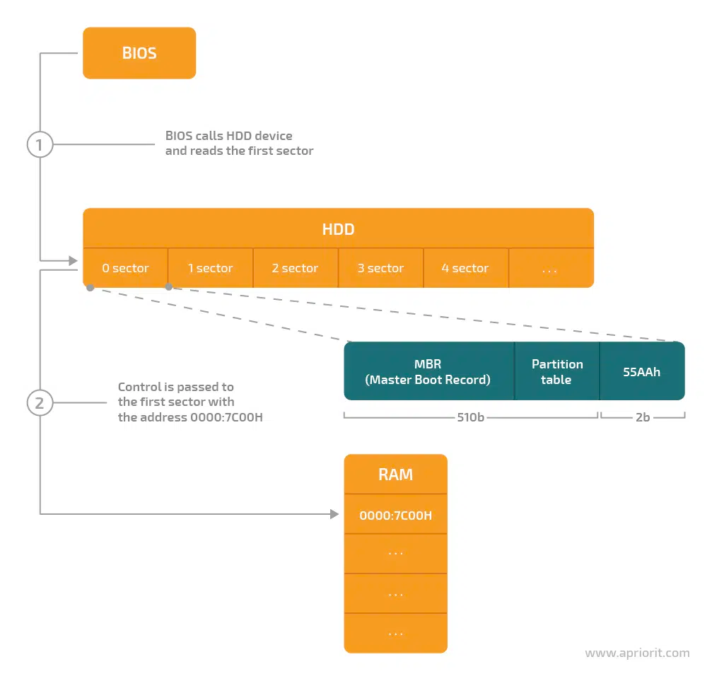
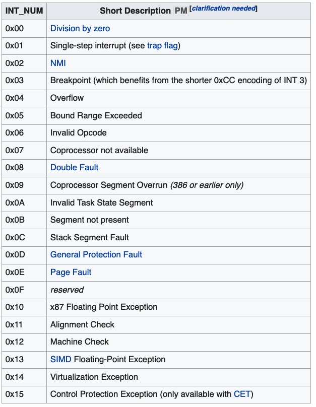
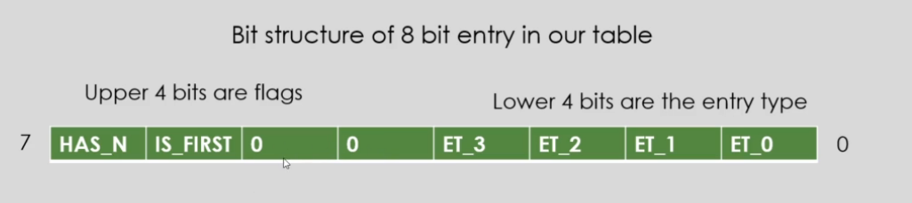
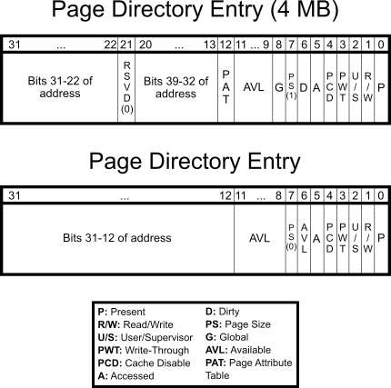
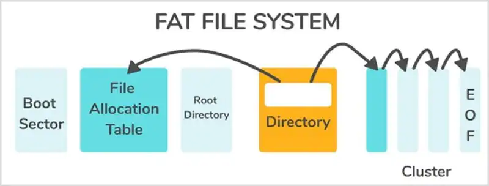

MiniOS
This project is inspired by Prof. Yuan Ding's ECE344 Operating System at the University of Toronto. In this course, we implemented core kernel features for the OS161 project. Having learned the foundations of kernel hacking, I want to challenge myself to build a fully functional kernel from the ground up. So I started digging online and found this amazing tutorial by Daniel McCarthy. Following Daniel's tutorial and other documentation online, I was able to successfully implement and execute my kernel on a QEMU x86 emulator. The following sections describe the key features of my kernel and some resources that I found to be helpful.
Feel free to clone my repo and run it yourself…

A bootloader is a tiny software that helps the CPU to load the operating system. It is stored in the first sector of the hard drive. The CPU automatically reads the data contained in this first sector and processes it to the memory when the machine is powered up.
Internally the bootloader's Master Boot Record contains the following submodules:
- Define the BIOS Parameter Block: BPB specifies the parameter of the hard drive, including the filesystem used and the physical geometry of the disk.
- Loading the kernel from disk using BIOS: to read data from disk, we need to specify where to start reading, how much to read, and where to store the data in memory. We can then send an interrupt signal (int 0x13) and the BIOS will do its work.
- Setup Global Descriptor Table: GDT is a data structure used by x86 processors to define the characteristics of the various memory areas used during program execution. Our GDT is structured as follows:
- A null segment address 0x00000000
- 4GB code segment descriptor
- 4GB data segment descriptor
- Switch to 32 bit protected mode: in protected mode, the system software is allowed to use features like virtual memory and paging.
- Kernel entry: jump to the main function of our kernel program
In this section, we set up the core kernel features such as:
- Interrupt Descriptor Table: a data structure used by x86 to determine the correct handler routine for interrupts and exceptions. The IDT consists of 256 interrupt vectors, the first 32 (0–31 or 0x00–0x1F) are used for processor exceptions, such as division by 0. 
- Heap Memory Allocation: for simplicity, we used an allocation table composed of an array of 1-byte values each representing a (4k) page allocation in the heap. This implementation is subjected to a lot of fragmentation and latency issues, but it's easy to write. Each entry in the table has the following property: 
- HAS_N: if the next entry is part of the allocation
- IS_FIRST: set if this is the first entry of our allocation
- ET: specify if the page is allocated or free
- Virtual Memory: Paging is a system that allows each process to see a full virtual address space, without actually requiring the full amount of physical memory to be available or present. Paging is achieved through the use of the Memory Management Unit (MMU). On the x86, the MMU maps memory through a series of tables, two to be exact. They are the paging directory (PD), and the paging table (PT). 
- FAT16 file system: file allocation table is a filesystem developed by Microsoft, FAT uses clusters to represent data and subdirectories. The entire disk is divided into clusters, the unit used by the file allocation, and the FAT describes which clusters are used by which files. 
We enable paging by loading the CR3 register with the address of the page directory and to set the paging (PG) and protection (PE) bits of CR0. https://en.wikipedia.org/wiki/Control_register#CR0
Resources:
The userland is the unprivileged CPU state, all the regular programs run here and they communicate with the kernel via interrupts and the standard library. We also develop a shell program that can be used to launch other executables. But before entering the userland, we still have a few things left to do in the kernel:
- Defining a process: we use kernel processes to host a user application, each process stores the following information:
- the registers needed to run the user program
- the paging directory
- the next and prev task, so that the kernel can switch between the tasks in a round-robin fashion to achieve multi-tasking
In our implementation, all the processes share the same file descriptor table, so all the opened files are shared which differs from the traditional Linux kernel.
- Getting to the userland from the kernel: to go from the kernel into the userland, we need to:
- Setup user code and data segments
- Setup the Task Switch Segment: it is used by the processor to get back to the kernel land when we have a system interrupt. It stores the kernel data segment descriptor and the value of the stack pointer used by the kernel
- Use the "iret" instruction to change the processor's privilege state
Our user-level programs:
- Standard library implementation: we implemented the following stdlib functions that require system calls (int 0x80) to the kernel:
- printf: print strings to the terminal
- getkey: return the latest keypress in the keyboard buffer
- malloc: return the virtual address of a heap allocation
- free: deallocate a heap allocation
- Shell program: the shell program is the default user program that will be run by the kernel, it can display the list of files that we mounted to the disk and launch the binary files as a separate task. Whenever a user program finishes executing, the control returns to the shell program.
List of software tools:
- Cross-compiler: a cross-compiler is a compiler that runs on platform A (the host), but generates executables for platform B (the target). In our case, the host platform is your current operating system and the target platform is the operating system you are about to make. In this project, the target is the generic i686-elf-gcc.
- Qemu: QEMU is a free and open-source emulator that performs hardware virtualization. It is capable of emulating a wide variety of systems including ARM, x86, and RISC-V, among others.
- GDB: a source-level debugger that can be used with the Qemu emulator